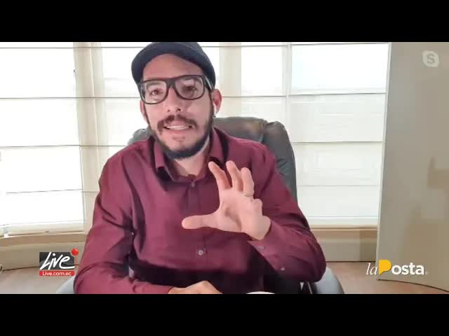
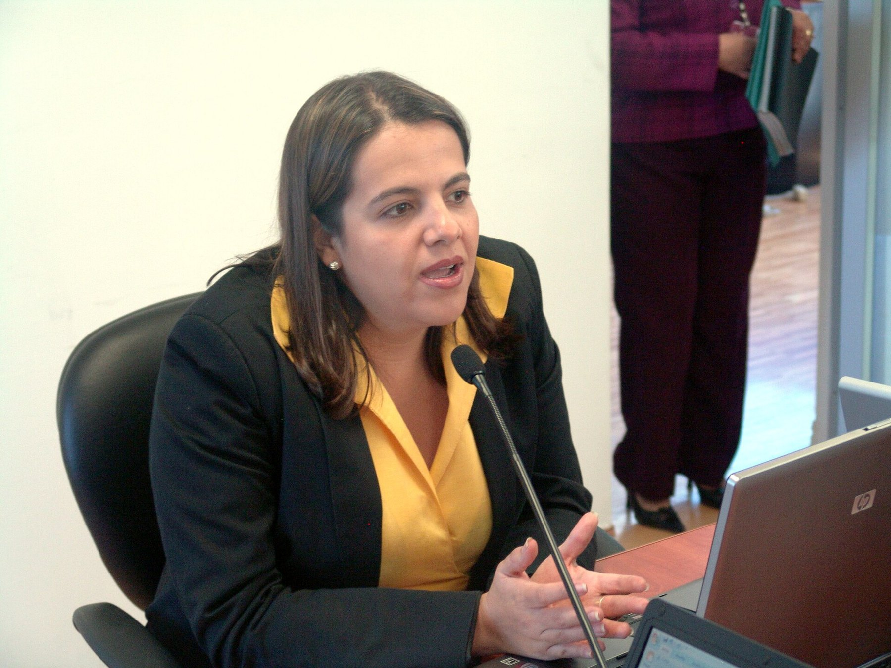
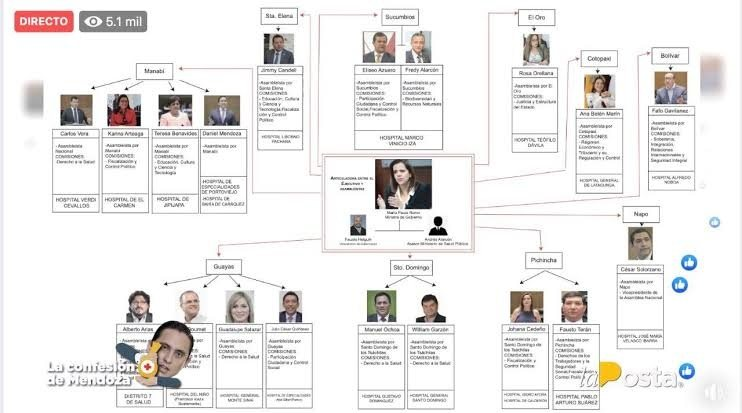
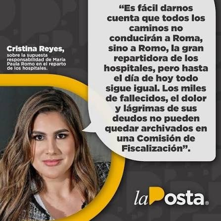
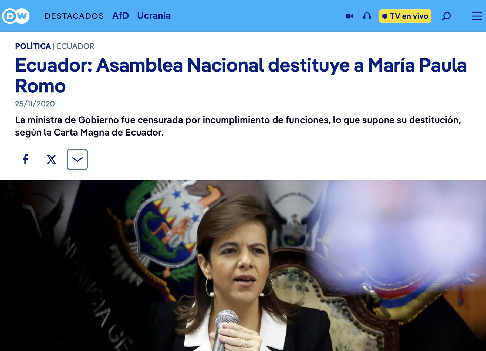
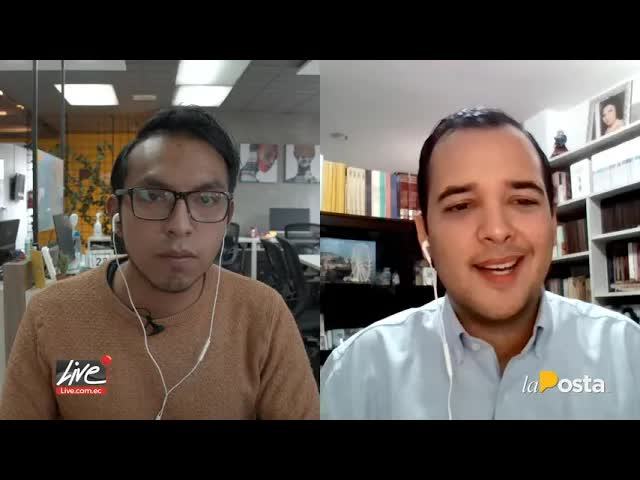

Café · Roberto Gómez, el interpelante
Daniel Mendoza, asambleísta preso por el hospital de Pedernales, le entregó a la Fiscalía un dibujo: un organigrama con la ministra de Gobierno en el centro y los hospitales del país repartidos entre legisladores a cambio de votos. La Posta lo puso al aire. Al día siguiente la Asamblea censuró a Mendoza y pidió la cabeza de María Paula Romo. Tres meses después la destituyó.
Daniel Mendoza era asambleísta por Manabí y dirigía la Comisión de Fiscalización hasta que la Fiscalía lo procesó, en mayo de 2020, por el hospital básico de Pedernales: una obra que él mismo gestionó tras el terremoto de 2016 y que nunca se construyó. Según la Fiscalía, él y un grupo de operadores armaron una estructura para dirigir la contratación pública y quedarse con el dinero; parte terminó en su movimiento político, Mejor. Preso en plena pandemia, Mendoza optó por cooperar. Entre lo que entregó había un diagrama.
El organigrama ponía a la ministra de Gobierno, María Paula Romo, en el centro, rodeada de asambleístas de Alianza País y de bancadas independientes, y repartía hospitales y espacios de la administración pública como cuotas políticas. El hospital de Pedernales para Mendoza. La dirección de Tránsito de Manabí, que según él recaudaba 2.500 dólares diarios. La Gobernación de Manabí para Tito Nilton. Cada hospital era un voto en la Asamblea, donde el Gobierno de Lenín Moreno no tenía mayoría. El 26 de agosto de 2020 La Posta lo transmitió en Café la Posta.

Con el diagrama salieron los chats. Mendoza le pide a la ministra un cargo para una persona a la que llama Karen. Romo responde con tres palabras: Listo. Va Karen. En otro mensaje Mendoza le sugiere a Tito Nilton para la Gobernación de Manabí y le manda su número y su hoja de vida. Nilton fue gobernador.

Listo. Va Karen.
Respuesta atribuida a María Paula Romo en los chats con Daniel Mendoza
Te pido un cargo para Karen.
Listo. Va Karen.
Te sugiero a Tito Nilton para la Gobernación de Manabí. Te mando su número y su hoja de vida.
La reacción fue inmediata. El 27 de agosto de 2020 la Asamblea censuró a Mendoza con 123 votos y, en la misma resolución, exigió al presidente Moreno remover a Romo por haber recibido sugerencias de nombres de un investigado. Roberto Gómez, de CREO, fue a Café la Posta esa mañana como interpelante. Romo reconoció los chats, dijo que no eran pruebas y negó haber entregado hospitales, ni de manera directa, ni a través de Mendoza o en acuerdo con él. La abogada de Mendoza dijo que lo del reparto eran inferencias de los periodistas. Mendoza dijo después que nunca armó un diagrama.
El 22 de octubre de 2020 Roberto Gómez y Amapola Naranjo presentaron con 45 firmas la cuarta solicitud de juicio político contra Romo, esta vez por el reparto. Mendoza declaró que la ministra le aseguró que Nilton sería designado cuando se archivara el juicio en su contra, y que intermediarios como Fausto Holguín hacían de puente entre legisladores para negociar cuotas. Gómez presentó además un audio sobre la injerencia de un familiar de Romo en el hospital de Tulcán. Romo compareció el 31 de octubre.

Lo que se dijo del reparto de hospitales cuando la Asamblea interpeló a la ministra.
En la misma resolución con la que censuró a Daniel Mendoza con 123 votos, el Pleno exigió al presidente Moreno remover a la ministra por haber recibido sugerencias de nombres de un investigado.
Roberto Gómez y Amapola Naranjo presentaron la solicitud de juicio político con 45 firmas.
Que la ministra le aseguró que Tito Nilton sería designado gobernador cuando se archivara el juicio en su contra, y que intermediarios como Fausto Holguín hacían de puente entre legisladores para negociar cuotas.
Gómez presentó además un audio sobre la injerencia de un familiar de Romo en el hospital de Tulcán.
Romo reconoció los chats, dijo que no eran pruebas y negó haber entregado hospitales: ni de manera directa, ni a través de Mendoza, ni en acuerdo con él.
El Pleno la censuró y la destituyó con 104 votos en el juicio paralelo por las bombas lacrimógenas caducadas del paro de octubre de 2019. El juicio por el reparto quedó abierto y sin resolver.
En marzo de 2024, tras la publicación del caso Metástasis, Romo dijo que en 2020 la acusaron injustamente de lo que otros estaban haciendo, robar en hospitales, y que Andersson Boscán y La Posta encabezaron los ataques en su contra.
La destitución llegó por otro camino. El 24 de noviembre de 2020 el Pleno la censuró y la destituyó con 104 votos en el juicio paralelo por las bombas lacrimógenas caducadas usadas contra los manifestantes en el paro de octubre de 2019. Fue la primera ministra de Gobierno destituida por la Asamblea en ese periodo. El juicio por el reparto quedó abierto y sin resolver.
Mendoza pagó por Pedernales. El 9 de noviembre de 2020 aceptó un procedimiento abreviado y fue condenado a cuatro años y dos meses de cárcel por delincuencia organizada; su asesor Jean Carlos Benavides, el exdirector del Secob René Tamayo y otros dos recibieron dos años y diez meses. En junio de 2021 los jueces rechazaron las apelaciones de Mendoza y de siete procesados más. En noviembre de 2021 Benavides, Franklin Calderón y José Véliz recibieron seis años más por lavado de activos. Mendoza cumplió los últimos catorce meses en régimen semiabierto.

Por el reparto nadie fue procesado. La Fiscalía no abrió un expediente con ese nombre y el organigrama quedó como documento de un juicio político que la propia Asamblea dejó morir cuando destituyó a Romo por otra causa. Karen y Tito Nilton no respondieron. Romo salió del Gobierno y volvió a la política como abogada y comentarista. En marzo de 2024, cuando la Fiscalía publicó el caso Metástasis, dijo que a ella la acusaron injustamente de lo que otros hacían, robar en hospitales, y que Andersson Boscán y La Posta encabezaron los ataques en su contra.
La ministra tenía razón en algo: la corrupción hospitalaria de 2020 era mucho más grande que un diagrama. Daniel Salcedo, el operador de las compras con sobreprecio en hospitales del Seguro Social, intentó huir en avioneta en julio de 2020, fue capturado y años después su teléfono dio origen al caso Metástasis. El organigrama de Mendoza fue la primera vez que alguien dibujó el mecanismo político que estaba detrás.
Actualizado el 5 de septiembre de 2026
La Fiscalía lo procesa por el hospital de Pedernales. Queda preso.
La Posta transmite el diagrama y los chats con Romo.
123 votos. La Asamblea pide a Moreno remover a Romo.
Gómez y Naranjo presentan 45 firmas por el reparto.
Reconoce los chats, niega el reparto.
Cuatro años y dos meses por delincuencia organizada, en procedimiento abreviado.
104 votos, por las lacrimógenas de octubre de 2019.
La condena de Mendoza queda en firme.
Benavides, Calderón y Véliz: seis años más.
Tras Metástasis, dice que la acusaron de lo que otros hacían.
Ministra de Gobierno.
Asambleísta por Manabí, procesado por el hospital de Pedernales.
Sugerido por Mendoza en un chat.
Asambleísta interpelante.
Fotos vía Wikimedia Commons. María Paula Romo: Ministerio Interior Ecuador (PDM-owner).
Reconoció los chats con Mendoza pero dijo que no eran pruebas y negó haber entregado hospitales como cuota política.
"Todo lo que los periodistas hablan sobre reparto de hospitales y de cargos son inferencias de ellos". Mendoza dijo después que nunca armó un diagrama.
En la resolución de censura a Mendoza exigió al presidente remover a la ministra.
Tras la publicación del caso Metástasis dijo que en 2020 la acusaron injustamente de lo que otros estaban haciendo, robar en hospitales, y que Andersson Boscán y La Posta encabezaron los ataques en su contra.


el tema que me ha dicho que quiere hacer esta parte de las de las menciones comerciales yo le digo el tema ahí tienes el número de teléfono 7 tu propio es porque mientras yo le demos dijo el mío arrancamos al programa bueno el programa especial de hoy vamos a hacer una revisión larga de los últimos acontecimientos han pasado algunas cosas habrán escuchado ustedes algo sobre el mundo sobre un área paula romo habrán es…
Leer la transcripción completahabía dicho hoy hacemos una pequeña modificación por todo lo que ocurrió la noche de ayer en el pleno de la asamblea así que mi primer invitado es el asambleísta héctor yepes asambleísta muchísimas gracias por aceptar esta llamada muy buenos días qué tal muy buenos días asambleísta al punto el día de ayer la asamblea sorprendió en realidad por lo por lo sucedido y vaya que fue la emoción que usted presentó sus primer…
Leer la transcripción completamovilidad amigas y amigos de la con todos ustedes muy buenos sándwiches para mí es un gusto poder acompañarlos en una nueva emisión de café la posta su programa preferido de entrevistas para analizar también la coyuntura nacional que estamos viviendo y que vivimos del día a día así que para mí es un gusto y un placer poder acompañarlos día decisivo día decisivo el día de hoy por todo lo que tiene que ver con el juici…
Leer la transcripción completaTranscripciones de los subtítulos automáticos de cada programa. No están corregidas a mano: sirven para buscar una frase y llegar al minuto exacto del video, no como cita textual literal.
Destituida por las lacrimógenas. El juicio por el reparto nunca se votó.
Mendoza y sus operadores fueron condenados por el hospital fantasma. El organigrama no produjo un solo procesado.
El mapa de relaciones reproduce lo que consta en el organigrama, los chats y las declaraciones públicas citadas. Falta incorporar el video original de la revelación, que no está en el canal público de La Posta.